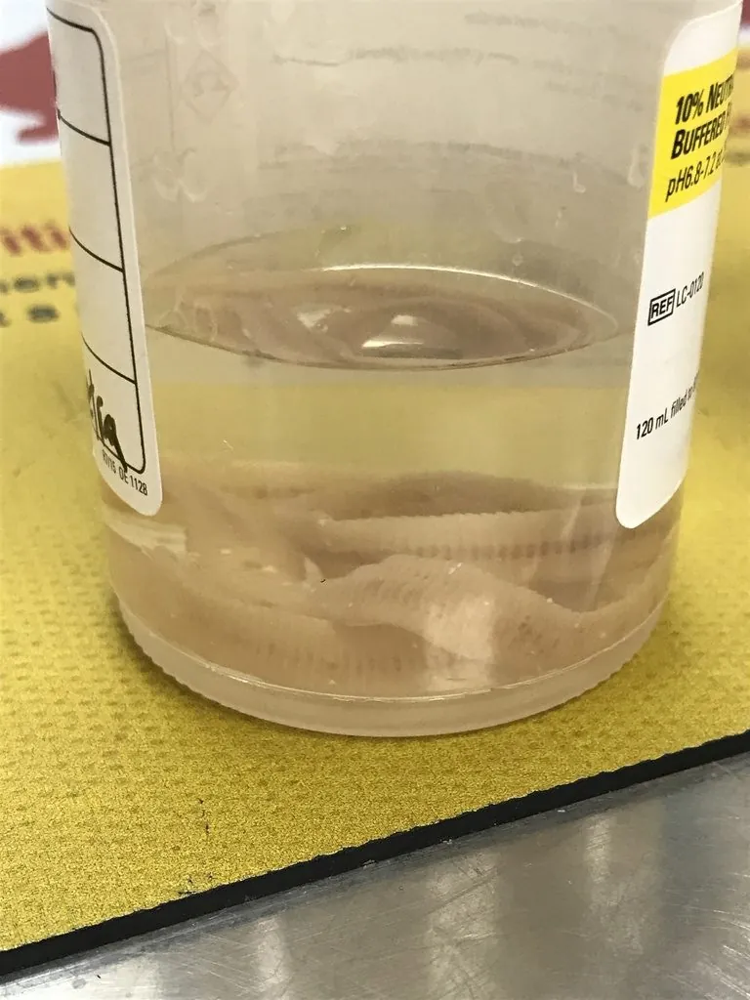

其他无脊椎动物 · 动物界
曼氏迭宫绦虫 Spirometra mansoni

成虫寄生在猫犬肠道的绦虫，幼虫称裂头蚴，人因生食蛙蛇或拿生蛙肉敷伤口而感染，可在皮下、眼和脑内游走。
- 分类
- 门扁形动物门纲绦虫纲目裂头绦虫目科裂头绦虫科属迭宫属
- 栖息环境
- 猫、犬等食肉动物的小肠，幼虫寄居于蛙、蛇、猪等动物的组织
- 地理分布
- 东亚与东南亚，中国南方和东北林区均有病例
- 保护级别
- 暂无评估
物种志
曼氏迭宫绦虫成虫长60–100厘米，头节呈指状，上面有两道吸槽而没有顶突和小钩。它的幼虫称为裂头蚴，呈白色带状，长数厘米，能在宿主的组织中穿行。
虫卵随猫犬粪便排入水中，孵出钩球蚴，被剑水蚤吞食后发育为原尾蚴；蛙、蛇、猪等吞食含原尾蚴的剑水蚤后，原尾蚴在肌肉中发育为裂头蚴，猫犬吃了这些动物便感染成虫。人感染有三条途径：生食或半生食蛙、蛇肉；饮用含剑水蚤的生水；用生蛙肉敷贴伤口或眼睛。裂头蚴在人体内到处游走，形成皮下结节、眼睑红肿，进入脑内可引起癫痫样发作。预防要拒绝生食蛙蛇、不用生蛙肉敷贴、饮水煮沸，治疗以手术取出虫体为主。
形态与习性
- 成虫长60–100厘米，头节有两道吸槽
- 裂头蚴白色带状，长数厘米，可在组织内游走
- 第一中间宿主剑水蚤
- 转续宿主蛙、蛇、猪等
- 感染途径生食蛙蛇肉、饮生水、用生蛙肉敷贴伤口
- 防护不食生蛙蛇、饮水煮沸、不用生蛙肉敷贴
- 治疗以手术取出裂头蚴为主
趣味知识
- 它的幼虫叫裂头蚴，能在人的皮下到处游走。
- 民间用生蛙肉敷伤口或眼睛，恰恰可能招来裂头蚴。
- 喝下含剑水蚤的生水，也可能感染这种绦虫。